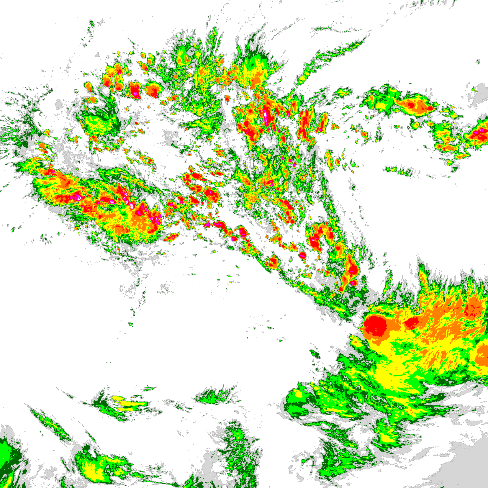

Focus on the acquisition, processing, and display of satellite imagery
The SOPHIA GEO differentiator inside the SOPHIA APP ecosystem lies in the controlled collection flow of GOES 19 (Geostationary Operational Environmental Satellite) imagery, obtained through NOAA (National Oceanic and Atmospheric Administration), the same reference source used by platforms such as INPE (National Institute for Space Research) and REDEMET (Aeronautics Command Meteorology Network), DECEA's aeronautical meteorology portal. From this reliable origin, the system processes the raw cloud data and delivers the already processed image for immediate operational reading.
Data flow to the screen
From raw file reception to the operational product displayed on the console.
Acquisition
SOPHIA GEO obtains GOES 19 data in raw format, preserving the integrity of the original meteorological information.
Isolation and ingestion
Collection enters through a segregated layer, with network protection and a dedicated server for secure ingestion of the meteorological package.

Processing
Cloud `netCDF4` data is decoded, processed, and converted into a highly readable visual product for the operational scenario.
Operational display
The processed image is made available to the operator in SOPHIA, ready for immediate interpretation and decision support.
Initial cloud acquisition
Visualization of the raw content received by the system before final composition, highlighting the technical stage of obtaining and reading meteorological data.
Image refined for operational use

After post-processing, the data becomes a more expressive visual product, with better contrast and quick reading for meteorological analysis.
Processing converges into the final visualization in SOPHIA
The emphasis is to show that SOPHIA does not merely display a static image: it receives satellite data, processes raw cloud content, and delivers the result inside an operational-use environment.
SOPHIA APP in operation